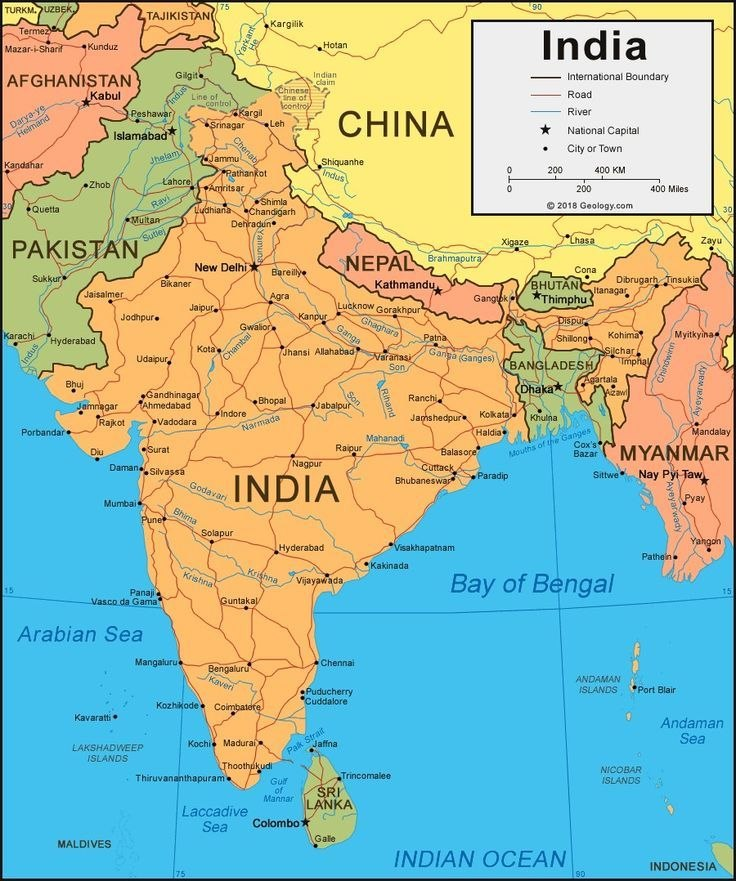

India's historical landscape is a vast tapestry of architectural marvels that span thousands of years, from prehistoric rock shelters to opulent colonial-era structures. The country currently hosts 44 UNESCO World Heritage Sites (https://en.wikipedia.org/wiki/List_of_World_Heritage_Sites_in_India), including iconic landmarks like the Taj Mahal, a 17th-century white marble mausoleum that stands as a global symbol of love. Other prominent sites include the sprawling Mughal fortresses of Delhi and Agra, the intricate rock-cut temples of Ajanta and Ellora, and the surreal ruins of the Vijayanagara Empire in Hampi.